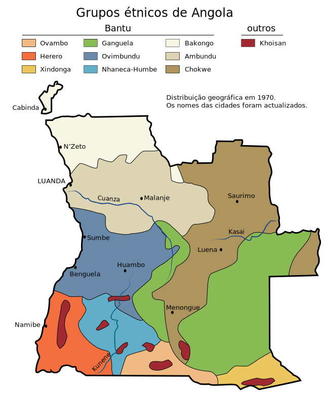
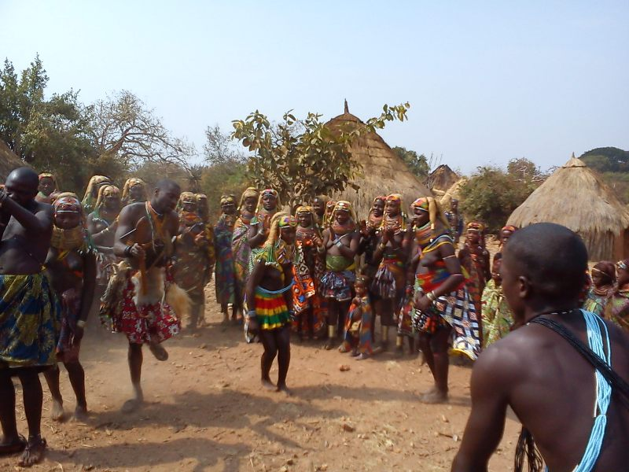
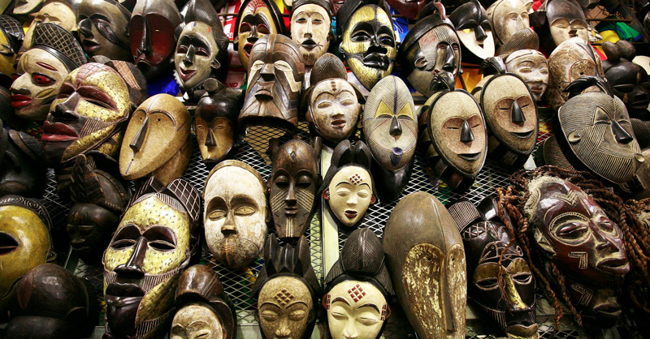
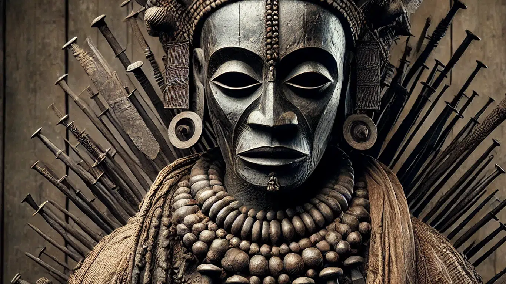
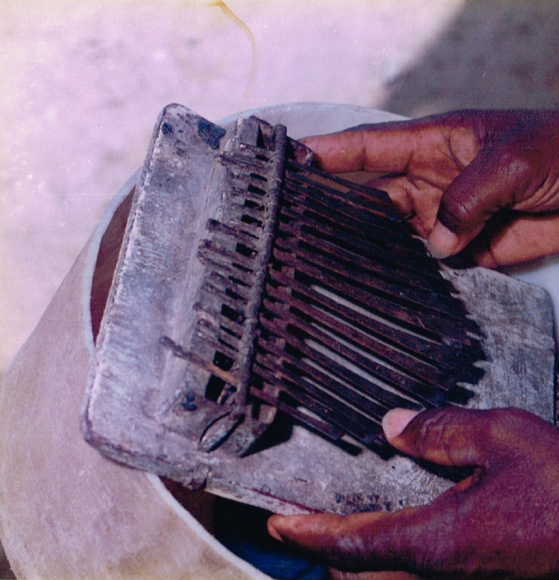
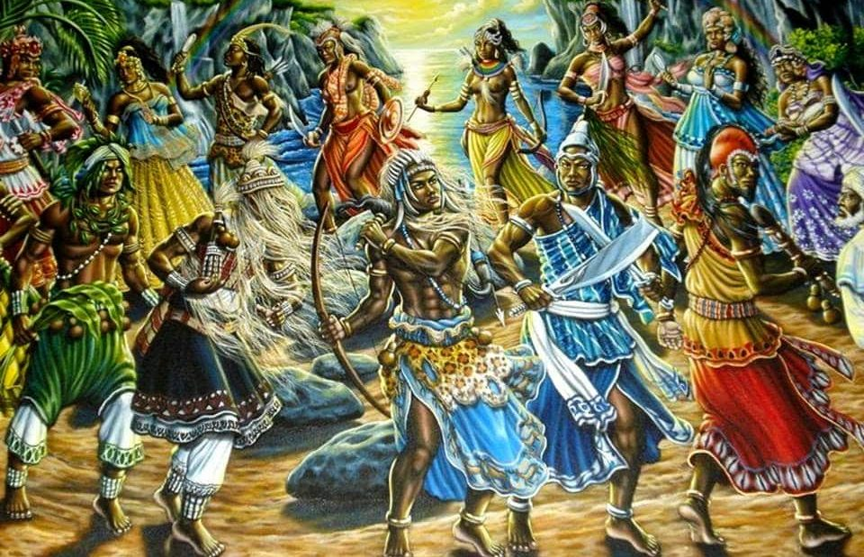

- Origem
O povo Ovimbundu é o maior grupo etnolinguístico de Angola, representando uma parte significativa da população do país. Eles habitam principalmente o planalto central, nas províncias do Huambo, Bié, Benguela e Huíla, regiões conhecidas pela sua fertilidade e clima ameno. A origem dos Ovimbundu está ligada à grande migração dos povos bantu que, há séculos, se deslocaram do centro de África em direção ao sul e ao oeste. Esses povos trouxeram novas técnicas agrícolas, o uso do ferro e uma estrutura social comunitária que formou a base da sociedade ovimbundu.
Antes da chegada dos europeus, os Ovimbundu já possuíam reinos e chefaturas organizadas. Esses reinos eram conhecidos como ombalas, e cada um era governado por um soba, líder responsável pela administração, justiça e defesa da comunidade.Entre os reinos mais conhecidos destacam-se o Reino do Bailundo, Reino do Bié, Reino do Wambu e Reino do Huambo. Esses reinos eram independentes, mas mantinham relações comerciais e culturais entre si, formando uma rede de cooperação e troca de bens.
O contacto dos Ovimbundu com os portugueses começou no século XVII, intensificando-se no século XIX com o comércio de escravos, marfim, borracha e cera. Os Ovimbundu tornaram-se conhecidos como excelentes comerciantes e intermediários entre o litoral e o interior de Angola. Essa tradição comercial fez dos Ovimbundu um povo empreendedor e viajante. Eles desenvolveram rotas conhecidas como “caminhos do sertão”, por onde transportavam mercadorias em longas caravanas, trocando produtos africanos por tecidos, sal e ferramentas europeias.
O contacto dos Ovimbundu com os portugueses começou no século XVII, intensificando-se no século XIX com o comércio de escravos, marfim, borracha e cera. Os Ovimbundu tornaram-se conhecidos como excelentes comerciantes e intermediários entre o litoral e o interior de Angola. Essa tradição comercial fez dos Ovimbundu um povo empreendedor e viajante. Eles desenvolveram rotas conhecidas como “caminhos do sertão”, por onde transportavam mercadorias em longas caravanas, trocando produtos africanos por tecidos, sal e ferramentas europeias.
Durante a luta de libertação de Angola, o planalto central, habitado pelos Ovimbundu, teve um papel importante. Muitos jovens da etnia participaram ativamente nos movimentos de resistência e contribuíram para a formação da nação independente. Hoje, os Ovimbundu são reconhecidos pela sua importância histórica, cultural e econômica. São um povo que, mesmo diante das transformações modernas, continua a valorizar as suas tradições e a preservar o seu idioma e identidade.
- culturas
A cultura Ovimbundu é uma das mais ricas e influentes de Angola. O seu idioma principal é o Umbundu, uma das línguas nacionais mais faladas no país, especialmente nas províncias do centro-sul. O Umbundu é usado não só na vida cotidiana, mas também em cerimónias, contos e canções. A estrutura social dos Ovimbundu é baseada na família extensa, que inclui pais, filhos, tios, avós e primos. O respeito pelos mais velhos é uma das maiores virtudes, e as decisões importantes costumam ser tomadas em conjunto, com base na sabedoria dos anciãos.
A relação com a terra é um elemento central na cultura Ovimbundu. A agricultura é considerada não apenas uma atividade econômica, mas também um valor cultural. Cultivam principalmente milho, feijão, batata-doce e mandioca, alimentos que fazem parte da base da sua alimentação. A música e a dança ocupam um lugar especial na vida dos Ovimbundu. São usadas para celebrar nascimentos, casamentos, colheitas e momentos religiosos. As canções são acompanhadas por instrumentos como tambores (ngoma), chocalhos e flautas tradicionais.
A religião tradicional dos Ovimbundu é centrada no culto aos antepassados e na crença em forças espirituais da natureza. Eles acreditam que os mortos continuam presentes na vida dos vivos e devem ser honrados através de rituais e oferendas. O cristianismo, introduzido pelos missionários, teve grande influência entre os Ovimbundu, especialmente através das igrejas protestantes e católicas. Mesmo assim, muitas comunidades mantêm práticas tradicionais que convivem com a fé cristã.
A educação tradicional é transmitida oralmente, através de contos, provérbios e músicas. Esses ensinamentos ajudam as crianças a compreender as normas sociais, o valor do trabalho e o sentido da vida comunitária. No mundo moderno, os Ovimbundu continuam a valorizar sua língua, suas canções e suas celebrações, buscando manter vivas as tradições dos antepassados enquanto se adaptam às transformações da sociedade angolana.
As tradições Ovimbundu são expressões profundas da sua identidade cultural e espiritual. Elas regulam o comportamento social, os ritos de passagem e as celebrações que marcam as fases da vida. Uma das tradições mais importantes é a iniciação dos jovens, que marca a transição da infância para a vida adulta. Durante esse período, os rapazes e as raparigas aprendem sobre responsabilidade, respeito, valores morais e os costumes do seu povo. O casamento tradicional Ovimbundu é um evento de grande importância. O processo envolve a negociação do dote, conhecido como “olumbundu”, que simboliza respeito e união entre as famílias do noivo e da noiva. A cerimónia é acompanhada por cânticos e danças festivas.

O nascimento de uma criança é celebrado com alegria e gratidão. A mãe e o bebê recebem cuidados especiais, e os anciãos realizam bênçãos para garantir a proteção espiritual e o bem-estar da família. A morte é um momento de respeito e espiritualidade profunda. Os Ovimbundu acreditam que a alma do falecido continua viva no mundo dos antepassados. Por isso, realizam rituais e oferendas para garantir que o espírito alcance a paz. A cura tradicional e a adivinhação também fazem parte das tradições. Os curandeiros, chamados “ombanda”, usam plantas medicinais, cânticos e rituais para tratar doenças físicas e espirituais, além de aconselhar a comunidade.
- Arte
A arte dos Ovimbundu é uma expressão vibrante da sua alma coletiva. Ela reflete o modo como este povo entende o mundo, a natureza e o sagrado. Suas manifestações artísticas abrangem escultura, música, dança, artesanato e literatura oral. A escultura em madeira é uma das formas mais conhecidas da arte Ovimbundu. As figuras esculpidas representam pessoas, animais e espíritos, sendo usadas tanto para decoração quanto em rituais religiosos e cerimónias de iniciação.
As máscaras têm um papel especial nas danças e ritos. Elas simbolizam forças espirituais e são usadas para conectar os vivos com os antepassados, especialmente durante festas tradicionais. A música tradicional Ovimbundu é marcada por ritmos alegres e harmoniosos. Instrumentos como tambores, marimbas, cabaças e flautas são usados para acompanhar canções que celebram a vida, o amor e o trabalho.
A dança é uma arte coletiva que envolve energia, movimento e espiritualidade. Cada tipo de dança tem um significado específico: há danças para casamentos, colheitas, funerais e celebrações de vitória. O artesanato é outro elemento importante da arte Ovimbundu. Eles produzem cestos, panelas de barro, colares e utensílios de madeira com desenhos geométricos e simbólicos que refletem o cotidiano e as crenças da comunidade.
A literatura oral dos Ovimbundu é extremamente rica. Contos, provérbios e lendas são usados para ensinar valores, preservar a história e transmitir o conhecimento dos mais velhos às novas gerações. Na atualidade, muitos artistas angolanos inspiram-se na arte Ovimbundu, combinando técnicas tradicionais com estilos modernos para expressar a identidade cultural de Angola no século XXI.